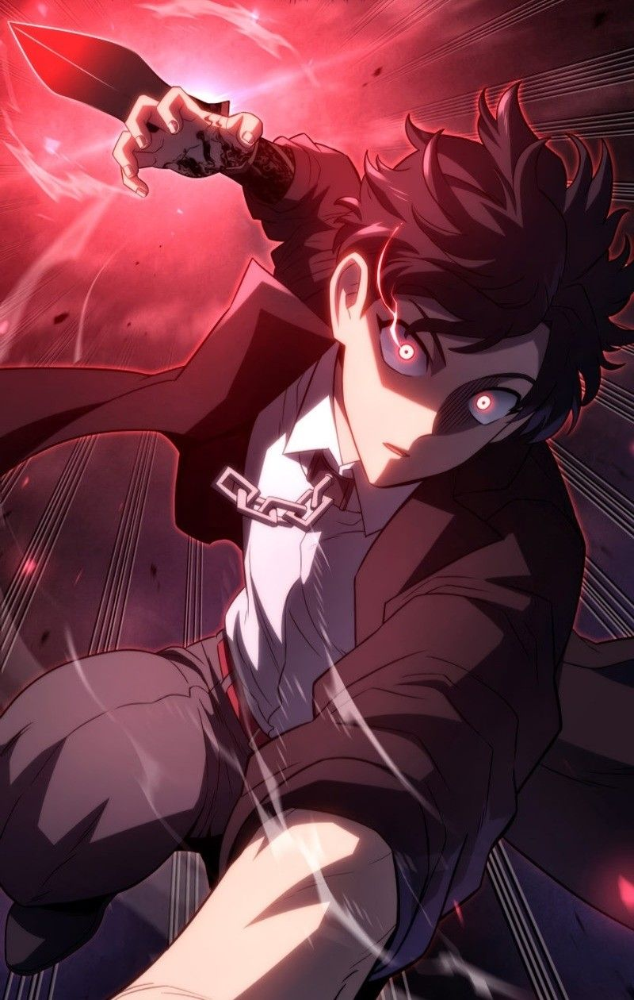
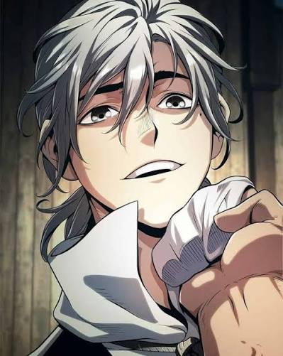
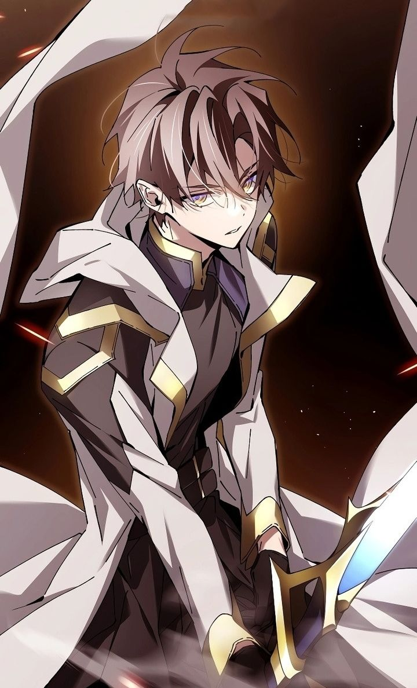

¿Qué es el manhwa?
El manhwa es el término utilizado para identificar las historietas y cómics originarios de Corea. Esta expresión artística combina ilustraciones y narración escrita para desarrollar historias de distintos géneros y temáticas.
Con el crecimiento de las plataformas digitales, el manhwa ha alcanzado lectores de diferentes países y ha adquirido mayor reconocimiento dentro de la industria del entretenimiento.

El género de acción
Entre los distintos géneros del manhwa, la acción destaca por desarrollar historias centradas en enfrentamientos, desafíos, conflictos y situaciones de peligro. Frecuentemente se combina con elementos de fantasía, aventura y ciencia ficción.

Características principales
- Protagonistas que enfrentan desafíos y adversarios.
- Escenas de combate y secuencias dinámicas.
- Sistemas de habilidades y poderes especiales.
- Desarrollo progresivo de los personajes.
- Conflictos que impulsan el avance de la historia.
Elementos narrativos
Las historias de acción suelen utilizar diferentes recursos para mantener el interés del lector. Entre ellos se encuentran la construcción de mundos, la evolución de los protagonistas y la presencia de antagonistas que representan obstáculos.

Recursos frecuentes
- Progresión: crecimiento de las capacidades del protagonista.
- Conflicto: enfrentamientos que impulsan la historia.
- Construcción del mundo: creación de escenarios, reglas y sistemas propios.
Obras representativas
Algunas obras han contribuido a la difusión internacional del manhwa de acción y fantasía. Entre ellas se encuentran Solo Leveling, Tower of God y The Beginning After the End.
Estas historias presentan diferentes formas de desarrollar la aventura, los conflictos y la evolución de sus personajes.
Impacto cultural y expansión digital
La distribución mediante plataformas digitales ha facilitado el acceso al manhwa desde distintas partes del mundo. El formato vertical, diseñado para la lectura en dispositivos móviles, ha contribuido a transformar la experiencia de los lectores.
Para conocer algunas publicaciones digitales, puedes visitar WEBTOON .